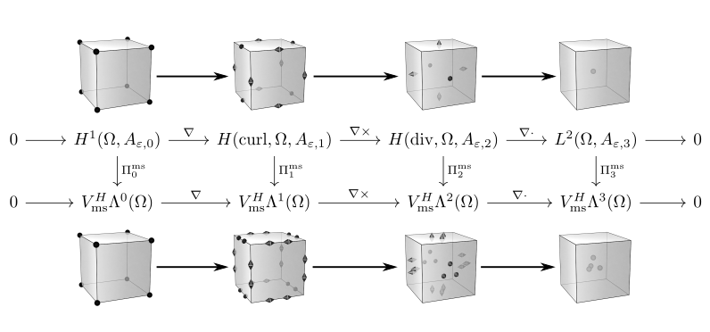
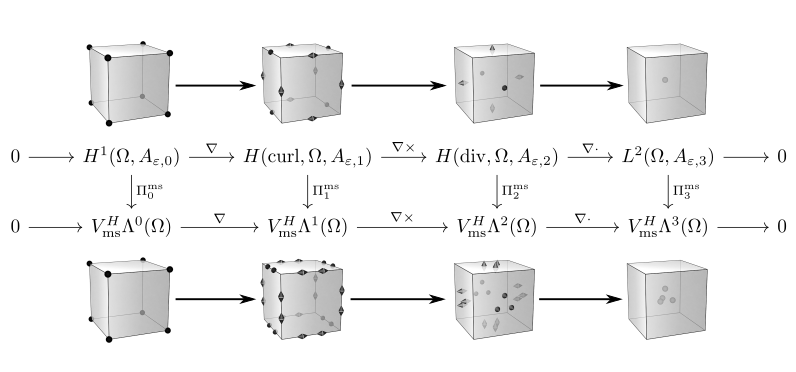

|  |
Multiscale Finite Element Complex (MsFEC)
v1.2
Parallel C++ Implementation of a 3D multiscale FE complex.
|
|  |
Multiscale Finite Element Complex (MsFEC)
v1.2
Parallel C++ Implementation of a 3D multiscale FE complex.
|
The purpose of this work is to introduce a unifiying framework for the construction of stable pairings of conforming multiscale finite elements in all spaces across the \(L^2\)-Hilbert complex
\begin{eqnarray} 0 \stackrel{}{\rightarrow} L^2\Lambda^0(\Omega,A_{\varepsilon, 0}) \stackrel{\nabla}{\longrightarrow} L^2\Lambda^1(\Omega,A_{\varepsilon, 1}) \stackrel{\nabla\times}{\longrightarrow} L^2\Lambda^2(\Omega,A_{\varepsilon, 2}) \stackrel{\nabla\cdot}{\longrightarrow} L^2\Lambda^3(\Omega,A_{\varepsilon, 3}) \stackrel{}{\rightarrow} 0 \end{eqnarray}
whose domain complex is a modified \(L^2\)-de Rham complex.
\begin{eqnarray} 0 \stackrel{}{\rightarrow} H(\mathrm{grad}, \Omega, A_{\varepsilon, 0}) \stackrel{\nabla}{\longrightarrow} H(\mathrm{curl}, \Omega, A_{\varepsilon, 1}) \stackrel{\nabla\times}{\longrightarrow} H(\mathrm{div}, \Omega, A_{\varepsilon, 2}) \stackrel{\nabla\cdot}{\longrightarrow} L^2(\Omega, A_{\varepsilon, 3}) \stackrel{}{\rightarrow} 0 \end{eqnarray}
for the Hodge-Laplace equation when weighted with rough coefficients.
This amouts to either solving scalar Laplace equations with rough coefficients in standard or mixed form or to solving vector valued Laplace equations in mixed form in spaces whose scalar procucts are weighted with rough positive coefficient functions. The latter seeks an (orthogonal) Helmholtz-Hodge decomposition (generalized Helmholtz decomposition) into threee types of functions: curl-free fields, divergence-free fields and so called hamonic forms with different boundary conditions dependent on the auxiliary variable chosen.
We consider a modified Hodge-Laplace equation on the unit square \(\Omega = [0,1]^3 \):
\begin{eqnarray} \mathrm{d}(A_{\varepsilon ,k+1}^{-1} \mathrm{d}^\ast)u_k + \mathrm{d}^\ast(A_{\varepsilon, k+1} \mathrm{d})u_k = f_k - P_{\mathfrak{h}^k} \end{eqnarray}
for positive coefficients \(A_\varepsilon^k\) and \(k=0,\dots ,3\).
In 3D this essentially amounts in two different equation - a scalar one and a vectorial one. The scalar case reads
\begin{eqnarray} \nabla\cdot(A_\varepsilon \nabla u) = f - P_\mathfrak{h} \end{eqnarray}
and the vector case reads
\begin{eqnarray*} \nabla\times(A_\varepsilon \nabla\times u) + \nabla(B_\varepsilon \nabla\cdot u) = f - P_\mathfrak{h} \end{eqnarray*}
apart from possibly switching the roles of the coeffcients.
Our method describes a stable multiscale discretization for relatively coarse meshes, i.e., we generate bounded projections such that the diagram
\begin{eqnarray*} \newcommand{\ra}[1]{\kern-1.5ex\xrightarrow{\ \ #1\ \ }\phantom{}\kern-1.5ex} \newcommand{\ras}[1]{\kern-1.5ex\xrightarrow{\ \ \smash{#1}\ \ }\phantom{}\kern-1.5ex} \newcommand{\da}[1]{\bigg\downarrow\raise.5ex\rlap{\scriptstyle#1}} \begin{array}{ccccccc} H(\mathrm{grad}, \Omega, A_{\varepsilon, 0}) & \ra{\nabla} & H(\mathrm{curl}, \Omega, A_{\varepsilon, 1}) & \ra{\nabla\times} & H(\mathrm{div}, \Omega, A_{\varepsilon, 2}) & \ra{\nabla\cdot} & L^2(\Omega, A_{\varepsilon, 3}) \\ \da{\Pi_{\textsf{ms}}^{\mathsf{grad}}} & & \da{\Pi_{\textsf{ms}}^{\mathsf{curl}}} & & \da{\Pi_{\textsf{ms}}^ {\mathsf{div}}} & & \da{\Pi_{\textsf{ms}}^{L^2}} \\ \mathcal{Q}^{\textsf{ms}} & \ras{\nabla} & \mathcal{Ned}^{\textsf{ms}} & \ras{\nabla\times} & \mathcal{RT}^{\textsf{ms}} & \ras{\nabla\cdot} & \mathcal{DQ}^{\textsf{ms}} \\ \end{array} \end{eqnarray*}
commutes. That means that is discrete sequence is a subcomplex of the original one.
The code is
The code produces one executable to solve the Hodge-Laplcae problem for each segment of the complex described above. Each executable takes as an input a parameter file containing information about the problems to be solved devided in three sections
sample paramter files are provided in the example_parameters/ subfolder of the code directory.
If you, for example, want to solve the multiscale Hodge-Laplace problem for 2-forms (i.e., with modified Nedelec-Raviart-Thomas element pairings) you need to call
An example parameter file can look like
 1.8.11
1.8.11